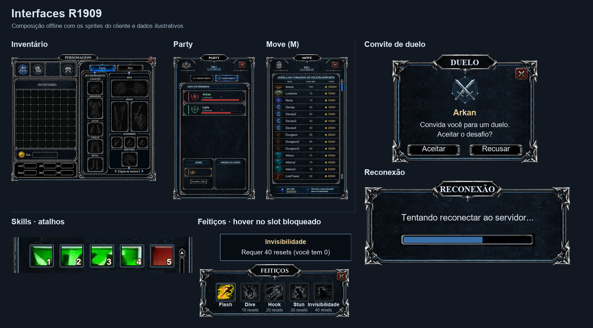
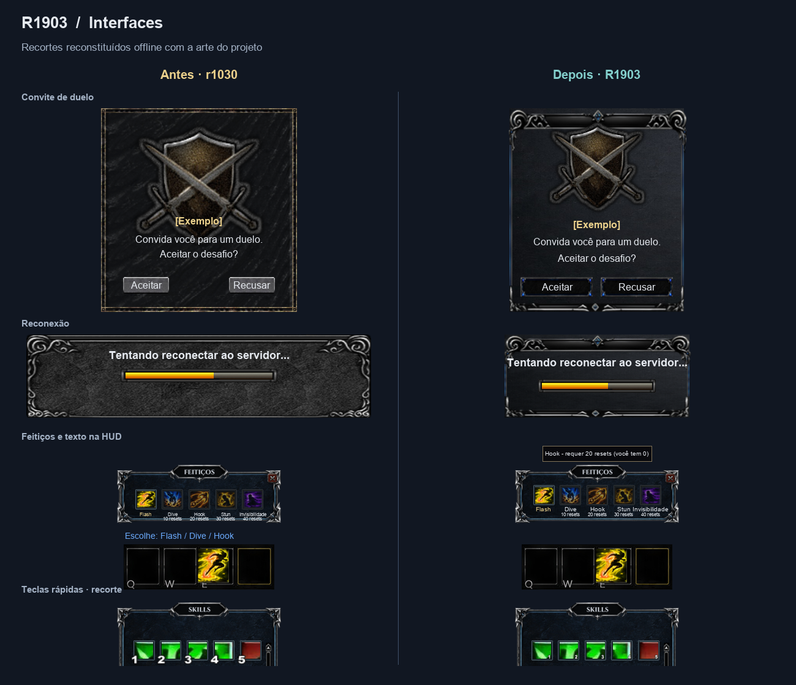

Janelas novas: duelo e reconexão
Arte NOVA (R1909), da mesma família das janelas que você já aprovou: à esquerda, Inventário, Party e Move como referência; à direita, o Convite de duelo e a Reconexão novos. Embaixo, os números das skills (tamanho intermediário) e o tooltip dos feitiços.
Já está na build r1032, pronta para você testar no jogo. A imagem foi montada fora do jogo com os sprites reais do cliente.

Versão anterior (reprovada)
